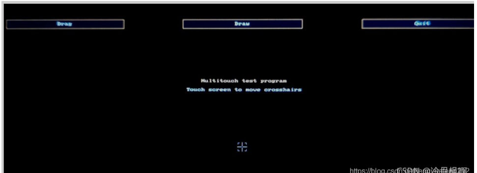

V3S添加GT911驱动
2023-02-01
一、在linux源码中添加gt911驱动
1.1、添加gt911驱动源码
drivers/input/touchscreen/gt911.c
#include <linux/module.h>
#include <linux/regmap.h>
#include <linux/gpio/consumer.h>
#include <linux/of_irq.h>
#include <linux/interrupt.h>
#include <linux/input.h>
#include <linux/input/mt.h>
#include <linux/debugfs.h>
#include <linux/delay.h>
#include <linux/slab.h>
#include <linux/gpio.h>
#include <linux/of_gpio.h>
#include <linux/input/mt.h>
#include <linux/input/touchscreen.h>
#include <linux/i2c.h>
/**
* file name：gt9xx
* date: 2021-09-01 15:04
* version：1.0
* author:luatao
* describe：gt9xx device drive
*/
#define GT_CTRL_REG 0X8040 /* GT9147控制寄存器 */
#define GT_MODSW_REG 0X804D /* GT9147模式切换寄存器 */
#define GT_CFGS_REG 0X8047 /* GT9147配置起始地址寄存器 */
#define GT_CHECK_REG 0X80FF /* GT9147校验和寄存器 */
#define GT_PID_REG 0X8140 /* GT9147产品ID寄存器 */
#define GT_GSTID_REG 0X814E /* GT9147当前检测到的触摸情况 */
#define GT_TP1_REG 0X814F /* 第一个触摸点数据地址 */
#define GT_TP2_REG 0X8157 /* 第二个触摸点数据地址 */
#define GT_TP3_REG 0X815F /* 第三个触摸点数据地址 */
#define GT_TP4_REG 0X8167 /* 第四个触摸点数据地址 */
#define GT_TP5_REG 0X816F /* 第五个触摸点数据地址 */
#define MAX_SUPPORT_POINTS 5 /* 最多5点电容触摸 */
/* 设备结构体 自定义 */
struct gt911_dev{
int irq_pin, reset_pin; /* 中断和复位IO */
int irqnum; /* 中断号 */
// void *private_date; /* 私有数据 */
struct input_dev *input; /* input结构体 */
struct i2c_client *client; /* i2c客户端 */
};
/* 定义一个设备结构体 */
struct gt911_dev gt911; /*gt911 设备 */
/*
const unsigned char GT911_CT[]=
{
0x5A,0x20,0x03,0xE0,0x01,0x05,0x3D,0x00,0x02,0x08,0x28,
0x08,0x5A,0x46,0x03,0x05,0x00,0x00,0x00,0x00,0x00,0x00,
0x04,0x04,0x04,0x04,0x03,0x88,0x29,0x0A,0x4B,0x4D,0x0C,
0x08,0x00,0x00,0x00,0x21,0x02,0x1D,0x00,0x01,0x00,0x00,
0x00,0x00,0x00,0x00,0x00,0x00,0x00,0x46,0x64,0x94,0xD5,
0x02,0x07,0x00,0x00,0x04,0x83,0x48,0x00,0x77,0x4D,0x00,
0x6D,0x53,0x00,0x64,0x59,0x00,0x5A,0x60,0x00,0x5A,0x00,
0x00,0x00,0x00,0x00,0x00,0x00,0x00,0x00,0x00,0x00,0x00,
0x00,0x00,0x00,0x00,0x00,0x00,0x00,0x00,0x00,0x00,0x00,
0x00,0x00,0x00,0x00,0x00,0x00,0x00,0x00,0x00,0x00,0x00,
0x00,0x00,0x02,0x04,0x06,0x08,0x0A,0x0C,0x0E,0x10,0x12,
0x14,0xFF,0xFF,0xFF,0xFF,0x00,0x00,0x00,0x00,0x00,0x00,
0x00,0x00,0x00,0x00,0x00,0x00,0x00,0x00,0x00,0x00,0x00,
0x02,0x04,0x06,0x08,0x0F,0x10,0x12,0x16,0x18,0x1C,0x1D,
0x1E,0x1F,0x20,0x21,0x22,0xFF,0xFF,0xFF,0xFF,0xFF,0xFF,
0xFF,0xFF,0xFF,0x00,0x00,0x00,0x00,0x00,0x00,0x00,0x00,
0x00,0x00,0x00,0x00,0x00,0x00,0x00,0x00,0xD6,0x01,
};*/
/* 从gt911读取多个寄存器数据
@param - *dev : gt911设备
@param - reg : 要读取的寄存器首地址
@param - *buf : 读取到的数据
@param - len : 要读取的数据长度
@return :操作结果
*/
static int gt911_read_regs(struct gt911_dev *dev, u16 reg, u8 *buf, int len)
{
int ret = 0;
u8 regdata[2]; // 寄存器数据
struct i2c_msg msg[2]; /* 传输的消息 读的命令 */
struct i2c_client *client = (struct i2c_client *)dev->client; /* 私有数据 */
/* gt911 寄存器长度为2个字节 */
regdata[0] = (reg >> 8) & 0xFF; // 高8位
regdata[1] = reg & 0xFF; // 低8位
/* msg[0] 为发送要读取的首地址 */
msg[0].addr = client->addr; /* 器件地址 */
msg[0].flags = 0; /* 标记为发送数据 */
msg[0].buf = ®data[0]; /* 要读取数据的首地址 */
msg[0].len = 2; /* reg长度 */
/* msg[1]读取数据 */
msg[1].addr = client->addr; /* 器件地址 */
msg[1].flags = I2C_M_RD; /* 标记为读取数据 */
msg[1].buf = buf; /* 读取数据缓冲区 */
msg[1].len = len; /* 读取数据长度 */
ret = i2c_transfer(client->adapter, msg, 2); /* 向总线发送2个消息 */
if(ret == 2){ /* 传输成功 */
ret = 0;
}else{
printk("i2c_transfer failed!\r\n");
return -EREMOTEIO;
}
return ret;
}
/* 从gt911多个寄存器写入数据
@param - *dev : gt911设备
@param - reg : 要写入的寄存器首地址
@param - *buf : 写入的数据缓冲区
@param - len : 要写入的数据长度
@return :操作结果
*/
static s32 gt911_write_regs(struct gt911_dev *dev, uint16_t reg, uint8_t *buf, int len)
{
uint8_t buf1[256];
struct i2c_msg msg; /* 传输的消息 */
struct i2c_client *client = (struct i2c_client *)dev->client;
buf1[0] = (reg >> 8) & 0xFF; /* 寄存器首地址 */
buf1[1] = reg & 0xFF;
memcpy(&buf1[2], buf, len); /* 要写入的数据拷贝到数据buf1中 */
/* msg处理数据 */
msg.addr = client->addr; /* 器件地址 */
msg.flags = 0; /* 标记为写入数据 */
msg.buf = buf1; /* 要写入的数据缓冲区 */
msg.len = len + 2; /* 写入的数据长度 */
return i2c_transfer(client->adapter, &msg, 1); /* 向总线发送1个消息 */
}
/* 从gt911读取指定寄存器值 读取一个寄存器
@param - *dev : ap3216设备
@param - reg : 要读取的寄存器
@return :读取到的寄存器值
*/
//static unsigned char gt911_read_reg(struct gt911_dev *dev, u8 reg)
//{
// struct i2c_client *client = (struct i2c_client *)dev->client; /* 私有数据 */
//return i2c_smbus_read_byte_data(client, reg); /* 读取一个字节数据 */
//}
/* 向gt911指定寄存器写入指定的值，写一个寄存器
@param - *dev : ap3216设备
@param - reg : 要写入的寄存器
@param - data : 要写入的值
@return :无
*/
static void gt911_write_reg(struct gt911_dev *dev, uint16_t reg, uint8_t data)
{
uint8_t buf = 0;
buf = data;
gt911_write_regs(dev, reg, &buf, 1); /* 调用写入多个寄存器的方法 */
}
/* 触摸中断处理函数 */
static irqreturn_t gt911_irq_handler(int irq, void *dev_id)
{
u8 touch_num = 0, status, havakey ; // 触摸点的数量最大5点触摸 数据是否准备好 是否有按键按下
int input_x, input_y, id = 0; // x，y坐标 触摸ID
int ret = 0; // 返回值
u8 data,touch_data[5]; // 触摸数据
struct gt911_dev *dev = dev_id; // 触摸设备结构体
/* 判断是否进入中断 */
//printk("cd %s\r\n",__FUNCTION__);
/* 读取坐标点寄存器 */
ret = gt911_read_regs(dev, GT_GSTID_REG, &data, 1);
/* 这一位数据的表示：
bit7：1表示坐标（或按键）已经准备好，主控可以读取 0 表示未就绪，数据无效
bit4：1表示有按键 0表示无按键（已经松开）
bit3~0：屏上的坐标点个数 */
if(data == 0x00){ /* 没有触摸数据*/
goto fail;
}else{ /* 统计触摸信息 */
status = data >> 7; // 取最高位
havakey = (data >> 4) & 0x01;
touch_num = data & 0x0f; // 只取低4位
}
/* 单点触摸 不适用于多点触摸*/
if(touch_num){ /* 有触摸按下 */
gt911_read_regs(dev, GT_TP1_REG, touch_data, 5); // 读取第一个触摸点 连续读5个数据
id = touch_data[0] & 0x0F;
if(id == 0){
input_x = (touch_data[1] | (touch_data[2] << 8)) & 0x0fff; // x坐标
input_y = (touch_data[3] | (touch_data[4] << 8)) & 0x0fff; // y坐标
input_mt_slot(dev->input, id); // 产生ABS_MT_SLOT 事件 报告是哪个触摸点的坐标
input_mt_report_slot_state(dev->input, MT_TOOL_FINGER, true); // 指定手指触摸 连续触摸
input_report_abs(dev->input, ABS_MT_POSITION_X, input_x); // 上报触摸点坐标信息
input_report_abs(dev->input, ABS_MT_POSITION_Y, input_y); // 上报触摸点坐标信息
//printk("x = %d, y = %d\r\n", input_x, input_y); //打印坐标信息
}
}else if(touch_num == 0){ // 单点触摸释放
input_mt_slot(dev->input, id); /* 上报触摸点 */
input_mt_report_slot_state(dev->input, MT_TOOL_FINGER, false); // 关闭手指触摸
}
input_mt_report_pointer_emulation(dev->input, true);
input_sync(dev->input); /* 同步数据 数据上报完成 */
data = 0x00; /* 向0x814E寄存器写0 不然就会一直进入中断 */
gt911_write_regs(dev, GT_GSTID_REG, &data, 1); //写入
fail:
return IRQ_HANDLED;
}
/* 申请IO并复位gt911
@param - *client : i2C控制器
@param - *dev : 自定义的触摸设备
@return :0：成功 其他负值 ：失败
*/
static int gt911_ts_reset(struct i2c_client * client, struct gt911_dev *dev)
{
int ret = 0;
printk("cd %s\r\n",__FUNCTION__);
/* 申请复位IO */
if(gpio_is_valid(dev->reset_pin)){ // 判断gpio是否合法
/* 申请复位 IO 并且默认输出高电平 */
ret = devm_gpio_request_one(&client->dev,
dev->reset_pin,
GPIOF_OUT_INIT_LOW,
"gt911 reset");
if(ret){ // 申请失败
printk("request reset_pin failed!\r\n");
return ret;
}
}
/* 申请中断IO*/
if(gpio_is_valid(dev->irq_pin)){ // 判断gpio是否合法
/* 申请复位 IO 并且默认输出高电平 */
ret = devm_gpio_request_one(&client->dev,
dev->irq_pin, // 引脚编号
GPIOF_OUT_INIT_LOW, // 默认的电平状态
"gt911 irq"); // 名字 随便
if(ret){ // 申请失败
printk("request irq_pin failed!\r\n");
return ret;
}
}
/* 初始化gt911 */
gpio_set_value(dev->reset_pin, 0); /* 复位 */
msleep(10);
gpio_set_value(dev->reset_pin, 1); /* 停止复位 */
msleep(10);
gpio_set_value(dev->irq_pin, 0); /* 拉低INT引脚 */
msleep(50);
gpio_direction_input(dev->irq_pin); /* INT引脚设置为输入 */
/* 有一个地址的判断 */
return 0;
}
/* gt911 中断初始化
@param - *client : i2C控制器
@param - *dev : 自定义的触摸设备
@return :0：成功 其他负值 ：失败
*/
static int gt911_ts_irq(struct i2c_client * client, struct gt911_dev *dev)
{
int ret = 0; // 返回值
/* 申请中断 */
ret = devm_request_threaded_irq(&client->dev,
client->irq,
NULL,
gt911_irq_handler,
IRQF_TRIGGER_FALLING | IRQF_ONESHOT,
client->name,
>911);
if(ret){
dev_err(&client->dev, "Unable to request touchscreen IRQ.\r\n");
return ret;
}
printk("gt911 handler irq number: %d\r\n", client->irq); // 打印出中断号
return 0;
}
/* 发送gt911配置参数
@param - *dev : 自定义的触摸设备
@param - mode : 0 :参数不保存到flash 1：参数保存到flash
@return :无
*/
/* 屏幕配置信息 */
/*
void gt911_send_cfg(void)
{
u8 regdata[186] = {0};
unsigned int i = 0,ret = 0;
u8 softVersion = 0; // 软件版本号
u8 gt911_id[6] = {0}; // 产品ID
u8 irqmode = 0; // 中断触发方式
u8 crc = 0; // 校验和
// 读软件版本号
gt911_read_regs(>911, GT_CFGS_REG, &softVersion,1);
printk("soft version:%d\r\n", softVersion);
// 读取产品ID
printk("ID: ");
gt911_read_regs(>911, GT_PID_REG, gt911_id,6);
for(i = 0; i< 6;i++)
printk("%d ", gt911_id[i]);
printk("\r\n");
// 读中断触发方式
gt911_read_regs(>911, GT_MODSW_REG, &irqmode,1);
printk("irqmode:%d\r\n", irqmode);
// 读取184个寄存器
gt911_read_regs(>911, GT_CFGS_REG, regdata,184);
for(i= 0; i < 186; i++){
printk("%#X ", regdata[i]);
if(i < 184){
crc += regdata[i]; // 校验和
}
}
printk("\r\n");
crc = (~crc) + 1;
printk("crc:%d\r\n", crc);
// 软件复位
gt911_write_reg(>911, GT_CTRL_REG, 2);
// 配置186个寄存器
// 获取设备树的配置信息
ret = of_property_read_u8_array(gt911.client->dev.of_node, "goodix,cfg-group0", regdata, 186);
if (ret < 0) {
printk("goodix,cfg-group0 property read failed\r\n");
} else {
printk("reg data:\r\n");
for(i = 0; i < 186; i++){
printk("%X ", regdata[i]);
}
printk("\r\n");
}
gt911_write_regs(>911, GT_CFGS_REG, regdata, sizeof(regdata));
gt911_write_reg(>911,GT_CTRL_REG,2);
msleep(100);
}
*/
/* i2C驱动的probe函数 ，当驱动与设备匹配以后此函数就会执行 */
static int gt911_probe(struct i2c_client *client, const struct i2c_device_id *id)
{
u8 ret = 0;
gt911.client = client;
printk("gt911 driver and device has match!\r\n"); // 提示信息
/* 1. 获取设备树中的中断和复位引脚 */
gt911.irq_pin = of_get_named_gpio(client->dev.of_node, "irq-gpio", 0);
gt911.reset_pin = of_get_named_gpio(client->dev.of_node, "rst-gpio", 0);
printk("get gpios success!\r\n");
/* 2. 复位gt911 申请GPIO并复位 */
ret = gt911_ts_reset(client, >911);
if(ret < 0){
printk("gt911 reset failed!\r\n");
goto fail;
}
/* 3. 初始化gt911 */
gt911_write_reg(>911, GT_CTRL_REG, 2); /* 软复位 */
mdelay(100);
gt911_write_reg(>911, GT_CTRL_REG, 0); /* 停止软复位 */
mdelay(100);
/* 4. input 注册设备*/
gt911.input = devm_input_allocate_device(&client->dev);
if(!gt911.input){
return -ENOMEM;
}
/* 初始化input */
gt911.input->name = client->name;
gt911.input->id.bustype = BUS_I2C;
gt911.input->dev.parent = &client->dev;
/* 设置input设备需要上报事件类型和按键值*/
__set_bit(EV_KEY, gt911.input->evbit);
__set_bit(EV_ABS, gt911.input->evbit);
__set_bit(BTN_TOUCH, gt911.input->keybit);
/* 设置input设备 需要上报的绝对坐标 */
input_set_abs_params(gt911.input, ABS_X, 0, 800, 0, 0);
input_set_abs_params(gt911.input, ABS_Y, 0, 480, 0, 0);
input_set_abs_params(gt911.input, ABS_MT_POSITION_X,0, 800, 0, 0);
input_set_abs_params(gt911.input, ABS_MT_POSITION_Y,0, 480, 0, 0);
/* 初始化多点电容触摸的slots*/
ret = input_mt_init_slots(gt911.input, MAX_SUPPORT_POINTS, 0); // 初始化 MT 的输入 slots 触摸点的数量
if(ret != 0){
printk("MT init failed!\r\n");
goto fail;
}
/* 注册input */
ret = input_register_device(gt911.input);
if(ret){
printk("input register failed!\r\n");
goto fail;
}
/* 最后初始化中断 */
ret = gt911_ts_irq(client, >911);
if(ret < 0){
printk("init irq failed!\r\n");
goto fail;
}
return 0;
fail:
return ret;
}
/* i2c驱动后的remove函数 */
int gt911_remove(struct i2c_client *client)
{
/* 释放输入设备 */
input_unregister_device(gt911.input);
printk("gt911 drive unregsister ok !\r\n");
return 0;
}
/* 传统匹配方式ID列表 */
static const struct i2c_device_id gt911_id[] = {
{"goodix,gt911", 0},
{}
};
/* 匹配列表 */
static const struct of_device_id gt911_of_match[] = {
{.compatible = "goodix,gt911"},
{/* Sentinel */}
};
/* i2c驱动结构体 */
struct i2c_driver gt911_i2c_driver = {
.driver = {
.owner = THIS_MODULE,
.name = "gt911", /* 驱动名字 用于和设备匹配 适用于没有设备树的情况*/
.of_match_table =gt911_of_match, /* 设备树匹配列表 */
},
.probe =gt911_probe,
.remove =gt911_remove,
.id_table = gt911_id, /* id配置列表 */
};
module_i2c_driver(gt911_i2c_driver);
/* LICENSE 和 AUTHOR 信息*/
MODULE_LICENSE("GPL");
MODULE_AUTHOR("luatao");
修改drivers/input/touchscreen/makefile
obj-y += gt911.o
1.2、修改设备树
去掉设备树中其他I2C0的设备节点
arch/arm/boot/dts/sun8i-v3s-licheepi-zero.dts
/*
&i2c0 {
status = "okay";
ns2009: ns2009@48 {
compatible = "nsiway,ns2009";
reg = <0x48>;
status = "disabled";
};
};
*/
添加gt911节点
arch/arm/boot/dts/sun8i-v3s-licheepi-zero-dock.dts
&i2c0 {
status = "okay";
gt911: touchscreen@5d {
compatible = "goodix,gt911";
reg = <0x5d>;
interrupt-parent = <&pio>;
interrupts = <1 3 IRQ_TYPE_EDGE_FALLING>; /* (PB3) */
pinctrl-names = "default";
irq-gpio = <&pio 1 3 GPIO_ACTIVE_HIGH>; /* (PB3) */
rst-gpio = <&pio 1 2 GPIO_ACTIVE_HIGH>; /* RST (PB2) */
status = "okay";
/* touchscreen-swapped-x-y */
};
};
1.3、编译linux
拷贝zimage和sun8i-v3s-licheepi-zero-dock.dtb到sd卡第一分区
二、移植tslib
2.1、在buildroot中打开tslib
在buildroot中打开tslib
make menuconfig
Target packages —>
Graphic libraries and applications (graphic/text) —>
[*] Qt5 —>
[*] Enable Tslib support
2.2、编译buildroot
```
make
#解压文件系统到第二分区
tar -xvf output/images/rootfs.tar -C /media/xsx/rootfs/
```
三、目标板上配置环境
3.1、添加tslib环境变量
修改/etc/profile
vi /etc/profile
export T_ROOT=/usr/tslib4arm #目录
export TSLIB_TSDEVICE=/dev/input/event1 #触摸屏设备文件
export TSLIB_CALIBFILE=/etc/pointercal #指定触摸屏校准文件pintercal的存放位置
export TSLIB_CONFFILE=/etc/ts.conf #tslib模块配置文件
export TSLIB_PLUGINDIR=/usr/lib/ts/ #tslib插件库目录
export TSLIB_CONSOLEDEVICE=/dev/tty
export TSLIB_FBDEVICE=/dev/fb0 #framebuffer设备文件
使生效
source /etc/profile
测试
ts_test

发现触摸不准，可校准
ts_calibrate
校准之后，可再次测试，发现触摸已准